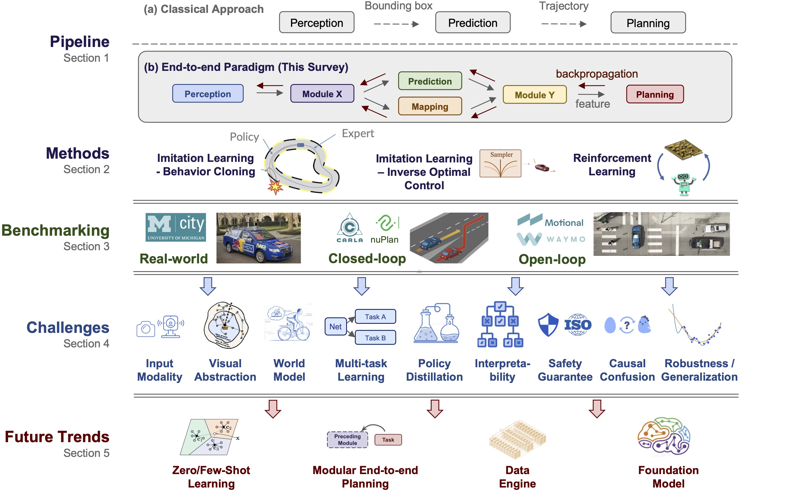

End-to-end Autonomous Driving: 自動運転研究に必要な包括的リソース

重要: 最新情報はopendrivelab.comで確認できる。
End-to-end Autonomous Driving
このリポジトリは、エンドツーエンド自動運転研究に必要なものをまとめたリソースである。 優れた講演、包括的な論文コレクション、ベンチマーク、チャレンジが提示されている。
目次
- 概観
- 初心者向け学習資料
- ワークショップと講演
- 論文コレクション
- ベンチマークとデータセット
- コンペティション / チャレンジ
- コントリビューション
- ライセンス
- 引用
- 連絡先
概観
自動運転コミュニティでは、検出やモーション予測のような個別タスクに集中するのではなく、生センサー入力を使って車両の運動計画を生成する、エンドツーエンドのアルゴリズムフレームワークを採用するアプローチが急速に増えている。このサーベイでは、エンドツーエンド自動運転における動機、ロードマップ、方法論、課題、将来動向について、270本を超える論文を包括的に分析している。詳細はサーベイ論文に記載されている。
End-to-end Autonomous Driving: Challenges and Frontiers
Li Chen、Penghao Wu、Kashyap Chitta、Bernhard Jaeger、Andreas Geiger、Hongyang Li
OpenDriveLab / Shanghai AI Lab、University of Hong Kong、University of Tübingen、Tübingen AI Center

関連する有用な資料を見つけた場合は、メールを送るか、Pull Requestを開いてほしい。
初心者向け学習資料
オンラインコース
- Lecture: Self-Driving Cars - Andreas Geiger、University of Tübingen、ドイツ
- Self-Driving Cars Specialization - University of Toronto、Coursera
- The Complete Self-Driving Car Course - Applied Deep Learning - Udemy
- Self-Driving Car Engineer Nanodegree Program - Udacity
ワークショップと講演
ワークショップ（近年）
- CVPR 2024: Foundation Models for Autonomous Systems
- CVPR 2024: Tutorial: End-to-End Autonomy: A New Era of Self-Driving
- CVPR 2024: Tutorial: Towards Building AGI in Autonomy and Robotics
- CVPR 2023: Workshop on End-to-end Autonomous Driving
- CVPR 2023: End-to-End Autonomous Driving: Perception, Prediction, Planning and Simulation
- ICRA 2023: Scalable Autonomous Driving
ワークショップ（以前の年）
- NeurIPS 2022: Machine Learning for Autonomous Driving
- IROS 2022: Behavior-driven Autonomous Driving in Unstructured Environments
- ICRA 2022: Fresh Perspectives on the Future of Autonomous Driving Workshop
- NeurIPS 2021: Machine Learning for Autonomous Driving
- NeurIPS 2020: Machine Learning for Autonomous Driving
- CVPR 2020: Workshop on Scalability in Autonomous Driving
関連講演
- Common Misconceptions in Autonomous Driving - Andreas Geiger、Workshop on Autonomous Driving、CVPR 2023
- Learning Robust Policies for Self-Driving - Andreas Geiger、AVVision: Autonomous Vehicle Vision Workshop、ECCV 2022
- Autonomous Driving: The Way Forward - Vladlen Koltun、Workshop on AI for Autonomous Driving、ICML 2020
- Feedback in Imitation Learning: Confusion on Causality and Covariate Shift - Sanjiban Choudhury、Arun Venkatraman、Workshop on AI for Autonomous Driving、ICML 2020
論文コレクション
このリポジトリでは、幅広い候補課題から主要なチャレンジを列挙し、トレンドとなっている方法論も整理している。完全な一覧はpapers.mdを参照し、詳細な議論はサーベイ論文を参照する。
- Survey
- Language / VLM for Driving: 運転のための言語モデルおよびVision-Language Model
- World Model & Model-based RL: ワールドモデルとモデルベース強化学習
- Multi-sensor Fusion: マルチセンサー融合
- Multi-task Learning: マルチタスク学習
- Interpretability: 解釈可能性、注意可視化、解釈可能タスク、コスト学習、言語的説明可能性、不確実性モデリング、反実仮想説明と因果推論
- Visual Abstraction / Representation Learning: 視覚抽象化と表現学習
- Policy Distillation: 方策蒸留
- Causal Confusion: 因果混同
- Robustness: ロングテール分布、共変量シフト、ドメイン適応
- Affordance Learning: アフォーダンス学習
- BEV
- Transformer
- V2V Cooperative: 車車間協調
- Distributed RL: 分散強化学習
- Data-driven Simulation: データ駆動シミュレーション、パラメータ初期化、交通シミュレーション、センサーシミュレーション
ベンチマークとデータセット
現実世界でのデプロイが、自動運転の最終的なベンチマークである。しかし、現実世界でのテストには費用がかかる。学術的なベンチマーキングについては、Jaegerらによる2024年の記事 Common mistakes in benchmarking を読むことが推奨されている。
クローズドループ
- CARLA: Leaderboard 1.0、Leaderboard 2.0
- nuPlan: Leaderboard（CVPR 2023チャレンジ後は非アクティブ）、NAVSIM
オープンループ
コンペティション / チャレンジ
- End-to-End Driving at Scale、Foundation Models for Autonomous Systems、CVPR 2024
- CARLA Autonomous Driving Challenge、Foundation Models for Autonomous Systems、CVPR 2024
- nuPlan planning、Workshop on End-to-end Autonomous Driving、CVPR 2023
- CARLA Autonomous Driving Challenge 2022、Machine Learning for Autonomous Driving、NeurIPS 2022
- CARLA Autonomous Driving Challenge 2021、Machine Learning for Autonomous Driving、NeurIPS 2021
- CARLA Autonomous Driving Challenge 2020、Machine Learning for Autonomous Driving、NeurIPS 2020
- Learn-to-Race Autonomous Racing Virtual Challenge、2022
- INDY Autonomous Challenge
コントリビューション
すべての貢献に感謝する。Pull Requestを作成する前に、コントリビューションガイドを読む必要がある。
ライセンス
End-to-end Autonomous DrivingはMITライセンスで公開されている。
引用
このプロジェクトが研究に役立つ場合は、次の文献の引用が推奨されている。
@article{chen2023e2esurvey,
title={End-to-end Autonomous Driving: Challenges and Frontiers},
author={Chen, Li and Wu, Penghao and Chitta, Kashyap and Jaeger, Bernhard and Geiger, Andreas and Li, Hongyang},
journal={IEEE Transactions on Pattern Analysis and Machine Intelligence},
year={2024}
}連絡先
主な連絡先は hy@opendrivelab.com。また、lichen@opendrivelab.com にも連絡できる。
OpenDriveLab Slackに参加してコミュニティと会話できる。Slackチャンネルは #e2ead。